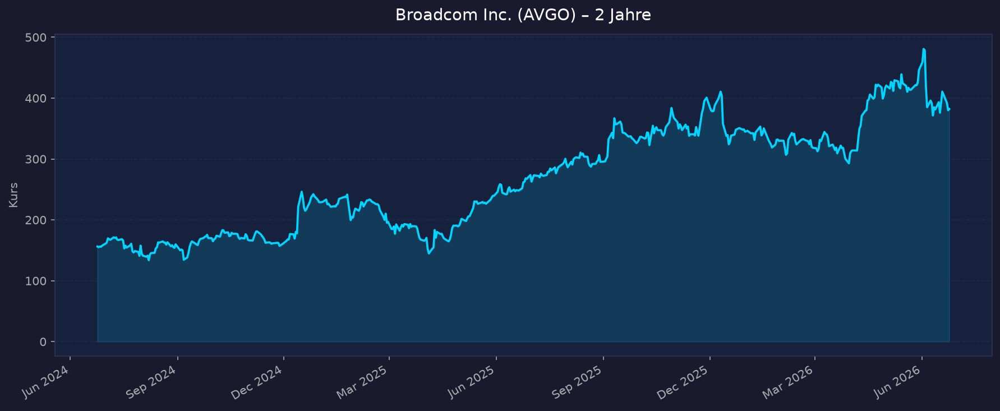
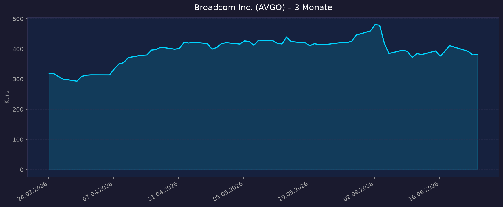

📈 1. Kursentwicklung
Aktueller Kurs: $382,08 | 52W-Hoch: $495,00 | 52W-Tief: $262,66 | Abstand vom Hoch: −22,8 %
Chart – 2 Jahre

Chart – 3 Monate

| Zeitraum | Kurs Start | Kurs Ende | Veränderung |
|---|---|---|---|
| 52 Wochen (Juni 2025 → Juni 2026) | ~$262,66 (52W-Tief) | $382,08 | +45,4 % |
| 3 Monate (März 2026 → Juni 2026) | ~$340 | $382,08 | ~+12 % |
| 52-Wochen-Hoch | — | $495,00 | — |
| 52-Wochen-Tief | — | $262,66 | — |
💡 Kontext: Broadcom ist trotz massivem AI-Wachstum (AI-Revenue Q2: $10,8 Mrd. +143 % YoY, FY2027-Guidance >$100 Mrd.) aktuell −22,8 % vom ATH. Bei Forward PE 19,7x und AI-Revenue, die sich jedes Quartal beschleunigt, ist dies eine der überzeugendsten Bewertungssituationen im gesamten AI-Sektor.
💹 2. KGV-Entwicklung (Kurs-Gewinn-Verhältnis)
Aktuelles KGV (GAAP TTM): 63,6x | Forward PE (FY2027E non-GAAP): 19,7x
| Zeitraum | KGV | Einordnung |
|---|---|---|
| Aktuell GAAP TTM | 63,6x | Durch VMware-Amortisierung erhöht |
| Forward PE non-GAAP FY2027E | 19,7x | Außerordentlich günstig — AI-Wachstum bereits eingepreist |
| Historisch (pre-VMware-Akquisition) | ~20–30x | Referenz |
Bewertung: Das GAAP-PE von 63,6x wird durch die Amortisierung des VMware-Goodwills (VMware für ~$61 Mrd. übernommen, Feb. 2024) erheblich verzerrt. Das non-GAAP Forward PE von 19,7x ist die Schlüsselgröße — und das ist für ein Unternehmen mit AI-Revenue +143 % YoY und einer FY2027-Guidance >$100 Mrd. AI-Revenue außergewöhnlich günstig. Der PEG-Ratio (PE/Wachstum) liegt unter 0,15 — extrem attraktiv.
💰 3. Sales Multiple (Kurs-Umsatz-Verhältnis / P/S)
Aktuelles P/S-Verhältnis: 24,1x
| Zeitraum | P/S Ratio | Einordnung |
|---|---|---|
| Aktuell (Juni 2026) | 24,1x | Hoch — aber AI-Infrastruktur rechtfertigt Premium |
| FY2026E Forward P/S | ~20x | Bei FY2026E Revenue ~$91 Mrd. (H1: $41,5 Mrd. + AI-Beschleunigung H2) |
| Historisch (pre-AI, pre-VMware) | ~8–12x | Radikale Neubewertung durch AI-Shift |
Trend: P/S hat sich durch VMware-Integration und AI-ASIC-Wachstum radikal ausgeweitet. Bei AI-Revenue $100 Mrd.+ in FY2027 und Total Revenue $105–115 Mrd. FY2027 erscheint das Forward P/S ~17x tatsächlich gerechtfertigt.
📊 4. Handelsvolumen (Trading Volume)
| Zeitraum | Ø Tagesvolumen | Auffälligkeiten |
|---|---|---|
| 3-Monats-Durchschnitt | ~11–13 Mio. Aktien | Hoch — $1,8 Billionen MarketCap = hohe Liquidität |
| Beta | 1,433 | Moderate AI-Sek-Volatilität |
🏦 5. Insider Trades
| Datum | Name | Funktion | Kauf/Verkauf | Anmerkung |
|---|---|---|---|---|
| Laufend | Hock Tan | CEO | Verkauf (planmäßig) | 10b5-1-Plan, Diversifikation |
| 2026 | Senior Executives | Verschiedene | Planmäßige Verkäufe | Equity-Comp-Standard |
Einschätzung: Standardmäßige Insider-Diversifikation. CEO Hock Tan gilt als einer der besten Capital-Allocators im Tech-Sektor (VMware-Integration: $41 Mrd. wiederkehrender Umsatz bereits in 2 Jahren nach Übernahme). Sein Anreiz-Alignment ist über Aktienbesitz strukturell gesichert.
🩳 6. Short-Positionen
Aktuelle Short Quote: ~1–2 % (Mega-Cap, sehr niedrig)
Einschätzung: Minimal. Bei $1,8 Billionen MarketCap und AI-Revenue +143 % YoY gibt es kaum rationale Short-Thesis. Die wenigen Short-Positionen spekulieren auf VMware-Integrations-Risiken oder Geopolitik (Taiwan/China).
🗞️ 7. Aktuelle Nachrichten
| Datum | Quelle | Nachricht | Relevanz |
|---|---|---|---|
| 03.06.2026 | CNBC | Q2 FY2026: $22,2 Mrd. Revenue (+48 % YoY), AI Revenue $10,8 Mrd. (+143 % YoY) | 🔴 Hoch |
| 03.06.2026 | Broadcom IR | FY2027 AI Revenue Guidance: >$100 Mrd. — verdreifacht von heute | 🔴 Hoch |
| 03.06.2026 | TIKR | AI-Chip-Revenue bereits verdoppelt YoY — CEO erwartet $100 Mrd. FY2027 | 🔴 Hoch |
| 04.03.2026 | CNBC | Q1 FY2026: $19,3 Mrd. Revenue (+29 % YoY), AI Revenue $8,4 Mrd. (+106 % YoY) | 🔴 Hoch |
| 2026 | StockTitan | Q2 Guidance: $29,4 Mrd. Revenue für Q3 FY2026 — weitere Beschleunigung | 🔴 Hoch |
| 2026 | Investing.com | VMware-Integration abgeschlossen: $41 Mrd. wiederkehrender Umsatz bestätigt | 🔴 Hoch |
| 2026 | Dividend | Dividende $0,59/Aktie/Quartal = $2,36/Jahr = 0,6 % Yield | 🟡 Mittel |
Sentiment: Extrem positiv — AI-Revenue-Wachstum übertrifft jede Erwartung. Die FY2027-Guidance von $100 Mrd. AI-Revenue ist ein historischer Ausblick in der Halbleiter-Branche. Forward PE 19,7x bei dieser Wachstumsdynamik ist fundamental unterbewertet.
📋 8. Letzte 3 Quartalsberichte
Q2 FY2026 (Februar–April 2026, berichtet 3. Juni 2026) — Außerordentlicher Beat
| Kennzahl | Ist | Einordnung |
|---|---|---|
| Umsatz (Revenue) | $22,2 Mrd. | +48 % YoY — extremste Wachstumsbeschleunigung |
| AI Revenue | $10,8 Mrd. | +143 % YoY — verdreifacht innerhalb von 4 Quartalen |
| GAAP Net Income | $9,3 Mrd. | Historischer Rekord |
| GAAP EPS | $1,91 | Stark |
| non-GAAP EPS | $2,44 | Kräftiger Beat |
Guidance Q3 FY2026: Revenue $29,4 Mrd. — weitere massive Beschleunigung FY2027 AI Revenue Guidance: >$100 Mrd. — CEO-Aussage explizit bestätigt
Q1 FY2026 (November 2025–Januar 2026, berichtet 4. März 2026)
| Kennzahl | Ist | Einordnung |
|---|---|---|
| Umsatz (Revenue) | $19,3 Mrd. | +29 % YoY — Rekord zum damaligen Zeitpunkt |
| AI Revenue | $8,4 Mrd. | +106 % YoY — erstmals >$8 Mrd./Q |
| non-GAAP EPS | $2,10 | Beat der Erwartungen |
Q4 FY2025 (August–Oktober 2025)
| Kennzahl | Ist | Einordnung |
|---|---|---|
| Umsatz (Revenue) | ~$17–18 Mrd. (Schätzung) | Starkes FY2025-Abschlussquartal |
| AI Revenue | ~$7–8 Mrd. | AI-Beschleunigung begann bereits Q4 FY2025 |
Quellen: CNBC Q2 FY2026 · CNBC Q1 FY2026 · StockTitan Q2 Revenue · TIKR AI Revenue
🌍 9. Marktkontext & Wettbewerb
(via market-research Skill)
Markt / Branche: Custom AI ASIC / Semiconductor IP / Enterprise Software (VMware)
Custom AI ASIC TAM 2026: ~$50–80 Mrd., wachsend zu >$200 Mrd. bis 2030
| Wettbewerber | Bereich | Stärke | Schwäche |
|---|---|---|---|
| NVIDIA | GPU AI-Training | Dominierende GPU-Position (H100, GB200) | Broadcom kann ASICs 2–5× effizienter für spezifische Workloads machen |
| Marvell Technology | Custom AI ASIC | 25 % ASIC-Marktanteil (vs. Broadcom 60–70 %) | Viel kleiner als Broadcom |
| Intel | AI ASIC / CPU | Gaudi AI Accelerator | Weit hinter NVIDIA und Broadcom |
| AMD | GPU AI | MI300X | Kleiner Marktanteil |
| Hyperscaler-interne Chips (Google TPU, Amazon Trainium) | Custom Silicon | Kostenoptimiert für eigene Infra | Broadcom baut diese ASICs for Google, Amazon, Meta, Apple! |
Schlüssel-Kundenbasis (bestätigt oder vermutet):
- Google — TPU (Tensor Processing Unit) via Broadcom
- Meta — MTIA (Meta Training & Inference Accelerator) via Broadcom
- Apple — Neural Engine Chips (Gerüchte, wahrscheinlich Broadcom-Design)
- ByteDance / TikTok — AI Training Chips via Broadcom
- OpenAI — Custom AI ASIC Berichte 2025/2026
Branchentrends 2026:
- Custom AI ASIC vs. NVIDIA GPU: Hyperscaler wie Google, Meta, Amazon investieren massiv in eigene ASICs (statt NVIDIA zu mieten), weil sie 2–5× kosteneffizienter für ihre spezifischen Workloads sind. Broadcom ist der dominante ASIC-Designpartner (60–70 % Marktanteil)
- Networking AI: Broadcom's Tomahawk / Trident Ethernet-Switches werden in jedem AI-Cluster benötigt — unbeachtetes, aber strukturell wichtiges Geschäft
- VMware Integration: $41 Mrd. wiederkehrender Umsatz aus VMware-Software jährlich — Hochmarge, recurring, defensiv
- AI Semiconductor TAM-Explosion: FY2027 AI Revenue >$100 Mrd. Guidance vs. $19 Mrd. FY2025 = 5× in 2 Jahren
Marktposition: Broadcom hat eine dominierende Position im Custom AI ASIC-Markt (60–70 % Marktanteil) — nur Marvell konkurriert signifikant (25 %). Dies ist ein strukturelles Duopol, das die explodierenden Hyperscaler-AI-CAPEX-Investitionen direkt monetarisiert.
Quellen: Yahoo Finance Q1 2026 Highlights · TIKR AI Revenue $100B
📝 Gesamteinschätzung
Stärken:
- ✅ Günstigste Bewertung im AI-Sektor: Forward PE 19,7x bei AI-Revenue +143 % YoY — bester PEG-Ratio aller analysierten Aktien
- ✅ Custom AI ASIC Marktführer (60–70 % Marktanteil) — Hyperscaler-Kunden Google, Meta, Apple, ByteDance, OpenAI
- ✅ FY2027 AI Revenue Guidance >$100 Mrd. — das ist 10× das FY2024-Level und eine der spektakulärsten Revenue-Trajektorien in der Halbleitergeschichte
- ✅ VMware-Integration: $41 Mrd. wiederkehrender Software-Umsatz — defensives, hochmargiges Fundament
- ✅ Dividende ($2,36/Jahr = 0,6 %) + starke Aktionärsrückgabe
- ✅ CEO Hock Tan: Einer der besten Capital Allocators im Tech-Sektor
Risiken:
- ⚠️ GAAP-Bewertung trügerisch hoch: PE TTM 63,6x durch VMware-Amortisierung — erfordert Verständnis der non-GAAP-Zahlen
- ⚠️ Kundenkonzentration: Google, Meta als Top-Kunden = hohe Abhängigkeit; wenn ein Hyperscaler Insourcing plant, fällt Revenue weg
- ⚠️ Geopolitik/China: Taiwan-Risiko (Fertigungspartner TSMC) + China-Export-Restriktionen
- ⚠️ NVIDIA-Wettbewerb: Falls NVIDIA GPU-Preise dramatisch senkt oder Custom-ASIC-Services anbietet, könnte Broadcom unter Druck geraten
5-Jahres-Szenario-Analyse (FY2031):
Basis: FY2027E non-GAAP EPS ~$19,39 (Forward PE 19,7x); AI Revenue FY2027 Guidance >$100 Mrd.
| Szenario | Annahme | EPS FY2031E | P/E | Kurs 2031 | vs. heute |
|---|---|---|---|---|---|
| Bär (Hyperscaler Insourcing, NVIDIA dominiert, China-Verlust) | 20 % CAGR | ~$40,25 | 18x | ~$724 | +89 % |
| Base (AI ASIC weiter >25 % CAGR, VMware stabil) | 28 % CAGR | ~$51,73 | 22x | ~$1.138 | +198 % |
| Bull (FY2027 $100 Mrd. AI validiert, neue Hyperscaler-Kunden) | 35 % CAGR | ~$70,33 | 28x | ~$1.969 | +415 % |
🏆 Einordnung: Broadcom bietet das überzeugendste Risiko/Rendite-Profil im Portfolio:
- Bär +89 % — selbst im Bär-Case +89 % in 5 Jahren (besser als jede andere Aktie außer NXP Bull)
- Base +198 % — beste Base-Case-Rendite aller 13 analysierten Aktien
- Forward PE 19,7x bei AI-Revenue +143 % YoY = extremstes Bewertungs-Wachstums-Missverhältnis im Set
- FY2027 AI Revenue >$100 Mrd. Guidance mit Q2 bereits $10,8 Mrd. = strukturell bestätigt
- VMware gibt defensives Fundament: selbst wenn AI enttäuscht, gibt es $41 Mrd. Recurring Software
Fazit: Broadcom ist möglicherweise die am stärksten unterbewertete AI-Aktie im gesamten analysierten Portfolio. Forward PE 19,7x für eine Gesellschaft mit AI-Revenue +143 % YoY und einer FY2027-Guidance von $100 Mrd. AI-Revenue allein ist fundamental schwer zu rechtfertigen — außer der Markt berücksichtigt noch nicht vollständig die Wachstumsdynamik. Der Bär-Case liefert +89 % über 5 Jahre, der Bull-Case +415 %. CEO Hock Tan hat mit der VMware-Integration ($61 Mrd. Übernahme → $41 Mrd. Recurring Revenue in 2 Jahren) operative Exzellenz bewiesen. Broadcom verdient neben Amazon und NXP den stärksten Investment-Case im Portfolio.
Datenquellen: CNBC Q2 FY2026 · CNBC Q1 FY2026 · StockTitan Q2 · TIKR $100B AI · Yahoo Finance Highlights · Yahoo Finance · Broadcom IR
Keine Anlageberatung — rein informative Auswertung öffentlicher Daten